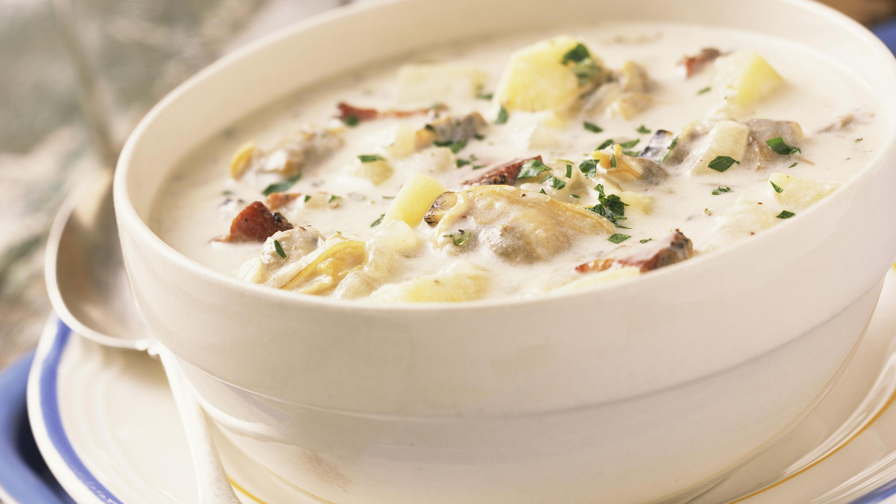

New England Clam Chowder

Description: Simple and flavorful that reminds you of home
This New England clam chowder is a hearty recipe that will warm you up on cold winter days.
This recipe is beginner-friendly. The clam chowder we will be making is hearty enough for a main meal.
Ingredients
4 slices bacon, diced
1½ cups chopped onion
4 cups peeled and cubed potatoes
1½ cups water
1½ teaspoons salt
½ teaspoon ground black pepper to taste
3 cups half-and-half
3 tablespoons butter
2 (10 ounce) cans minced clams
Steps
- Place diced bacon in a large stockpot over medium-high heat; cook and stir until almost crisp. Add onion; cook and stir until tender, about 5 minutes.
- Stir in potatoes and add water; season with salt and pepper and bring to a boil. Reduce heat to low and simmer, uncovered, until potatoes are tender, about 15 minutes.
- Pour in half-and-half and add butter. Drain clams, reserving clam liquid; stir clams and 1/2 of the clam liquid into the soup. Cook until heated through, without boiling, about 5 minutes.`